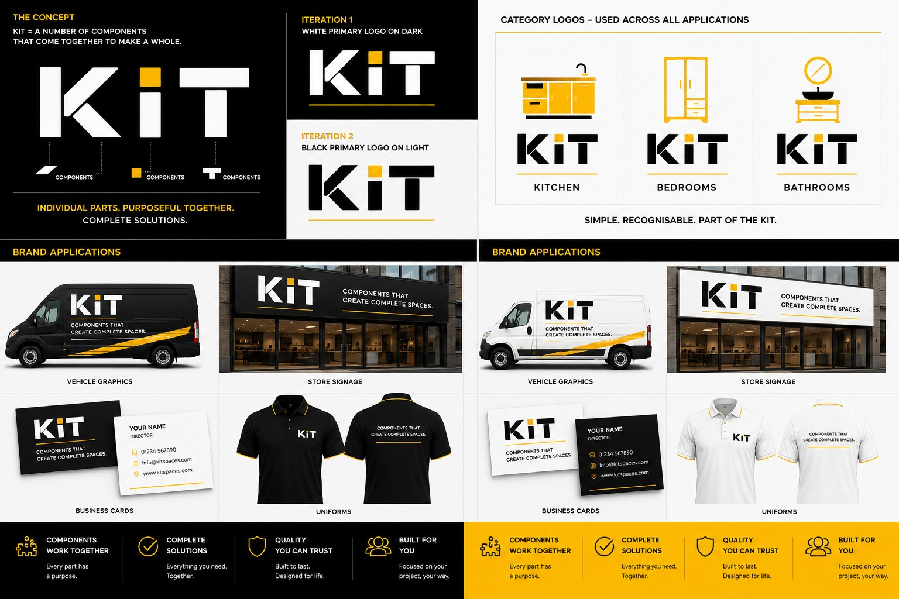
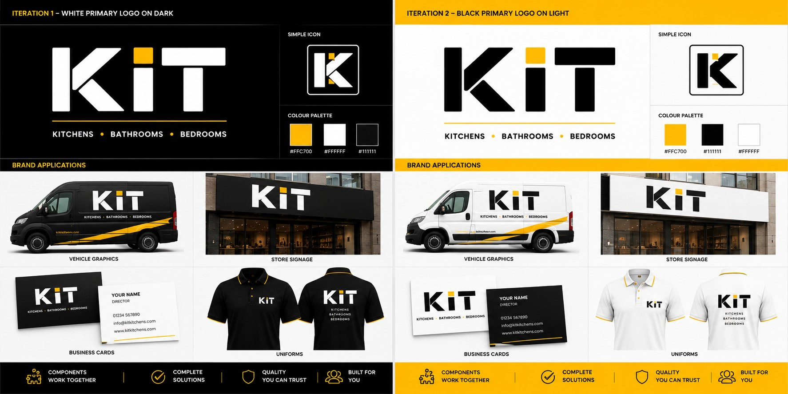
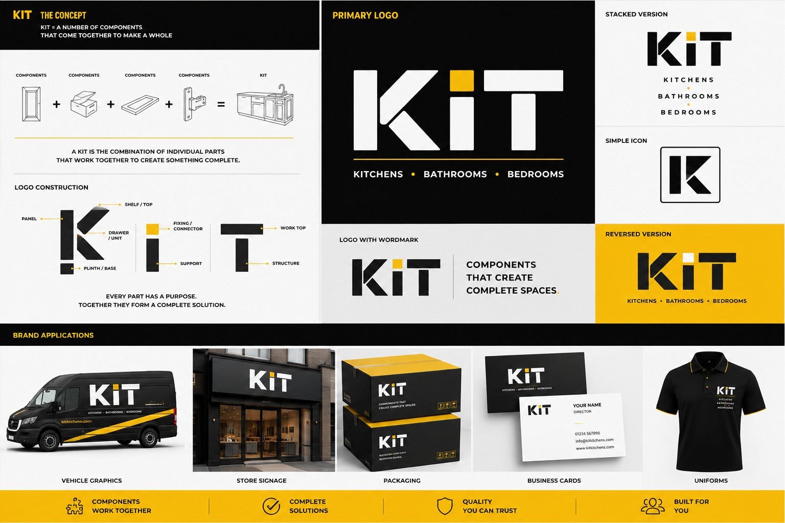
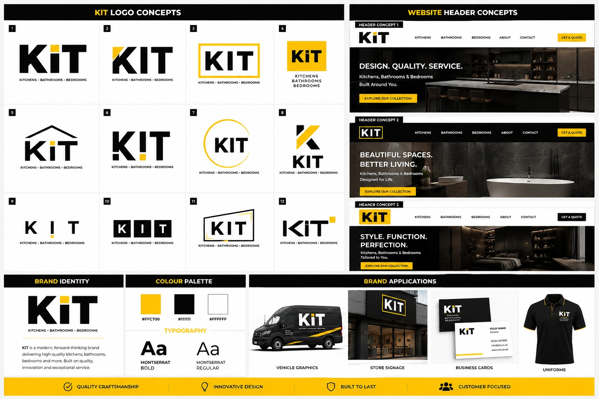

KIT
Kitchens
A direct, memorable anchor for fitted kitchens, retail and e-commerce.
A scalable home-interiors masterbrand, five category brands, ten matching premium domains and a launch-ready visual identity.

“Kit” means the components needed to make something complete. The identity expresses that idea through modular forms: individual elements combine into one recognisable master logo, while each category retains the same system.
A direct, memorable anchor for fitted kitchens, retail and e-commerce.
A natural extension for fitted bedrooms, wardrobes and bedroom furniture.
A focused identity for bathroom retail, specification, supply and installation.
The broad category brand for whole-home design, furnishing and project delivery.
A flexible brand for fitted storage, utility rooms, closets and organisation.
A dedicated gallery presents the master logo, category system, vehicle livery, packaging, signage, uniforms, stationery and digital applications.




Ten domains are confirmed in the current portfolio materials. Any additional domains can be added before publication.
Request the regional acquisition supplement or submit a confidential expression of interest.
info@kitkitchens.com